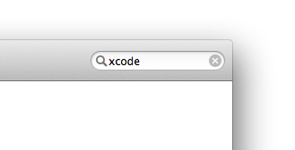
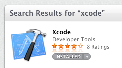
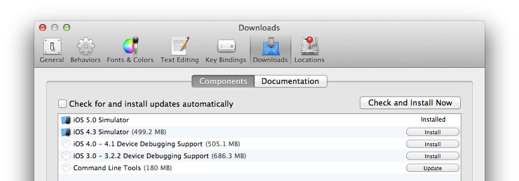
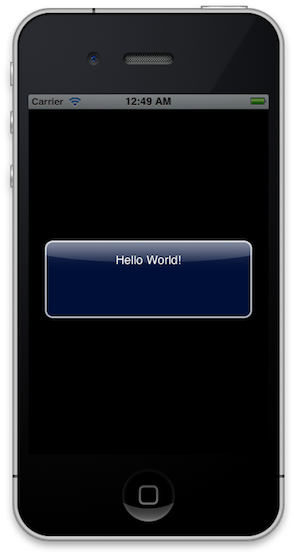
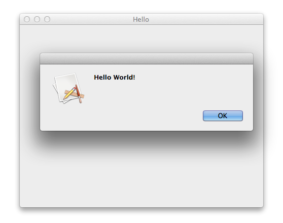

Getting Started with RubyMotion for iOS and OS X
Thank you for downloading RubyMotion. This guide will help you get started with RubyMotion for iOS and OS X.
1. Overview
RubyMotion is a toolchain that permits the development of iOS, OS X and Android applications using the Ruby programming language.
iOS is Apple’s mobile operating system, powering a variety of devices such as the iPhone, iPod touch and iPad. OS X is Apple’s desktop operating system, powering Mac computers such as the iMac or the MacBook Air. Android is Google’s mobile operating system, powering a huge array of devices from different manufacturers.
Developers can write applications for iOS and OS X and submit them to the App Store, Apple’s application distribution system. Alternatively, RubyMotion can be used to conceive applications for Android that can be submitted to the Google Play store.
Conceptually, RubyMotion is a combination of two major components:
-
Runtimes: Brand-new implementations of the Ruby language, tightly integrated with the native Apple or Google runtime and optimized for embedded device constraints.
-
Project Management: A command-line interface to create, manage, and interactively develop RubyMotion projects. It also includes a static compiler that compiles Ruby into optimized machine code and an interactive console where you can evaluate expressions on the fly and change the way your app behaves in real-time.
RubyMotion installs itself into '/Library/RubyMotion'. A symbolic link to the command-line interface is created as '/usr/bin/motion'.
This document focuses on RubyMotion for iOS and OS X. For Android, check out the Getting Started With Android document instead.
2. Prerequisites
RubyMotion requires a 64-bit Mac running OS X 10.8.4 or higher. OS X 10.9 Mavericks or higher is however recommended.
You will need to install the iOS and OS X SDK on your machine. These days the SDKs comes with Xcode.
2.1. Installing Xcode
Xcode can be downloaded and installed for free using the App Store application.
|
Note
|
Xcode is Apple’s IDE. You do not need to use it when programming with RubyMotion, you can keep using your favorite text editor. |
Open the 'App Store' application then search for "Xcode" in the search field.

Find Xcode from the result, then click on it.

That should open a new page where you can download Xcode.
Once Xcode is installed, you will need to install the Command Line Tools package, required by RubyMotion.
Open the Xcode application from your Applications folder, then go to the Preferences window and click on the Downloads tab. You should see the 'Command Line Tools' package in this list, make sure to hit the Install button.

Okay, you should be all set now! You can close Xcode.
If you happened to have an older version of Xcode installed on your machine before you installed a newer Xcode from the App Store, you may want to type the following command in order to properly set up the default Xcode path.
$ sudo xcode-select -switch /Applications/Xcode.app/Contents/Developer3. Text Editor
After having installed RubyMotion you need to set up a text editor for development. RubyMotion does not come with a proprietary IDE and lets you use the editor of your choice.
3.1. RubyMine
RubyMine is a commercial IDE for Ruby built on JetBrains' IntelliJ IDEA platform.
It is at the time of this writing the best environment to work with RubyMotion. RubyMine features context-based auto-completion, point-and-click debugging (on both the simulator and the device), inline documentation, and so on.
Please refer to the Getting Started with RubyMotion guide on JetBrains' developer website for more information.
3.2. TextMate
TextMate is a popular editor on OS X.
A RubyMotion.tmbundle plugin is available. It provides code completion and an integration with the build system. It is developed by Libin Pan and Berklee.
3.3. Sublime Text
Sublime Text is a relatively new editor for OS X, Windows and Linux that is gaining a lot of interest.
SublimeRubyMotionBuilder is a plugin that provides code completion and an integration with the build system. It is developed by Kentaro Hara.
3.4. Redcar
Redcar is an Open Source editor written in Ruby.
redcar-rubymotion is a plugin that integrates the RubyMotion workflow in Redcar. All features of RubyMotion are integrated. It is developed by Delisa Mason.
3.5. Vim
Vim is the most popular clone of vi. Vim ships in OS X. MacVim is a flavor of Vim for OS X that runs outside the terminal.
The builtin rake ctags task can be used to generate a tags file containing all the APIs the project can call into. This file can then be used to automatically complete API calls in the editor. RubyMotion uses Exuberant Ctags. Ctags is a format understood by a variety of text editors, Vim included.
Better auto-completion can be provided by using the snipmate-snippets-rubymotion plugin, courtesy of Rajeev Cyrus.
3.6. Emacs
Emacs is a popular text editor. Emacs ships in OS X.
motion-mode is a plugin that provides code completion and an integration with the build system. It is developed by Satoshi Namai.
4. Software Updates
Software updates can be applied via the command-line.
The following command will grab the latest version of RubyMotion from the network and install it. You must be connected to the Internet to successfully update RubyMotion.
$ sudo motion updateYou can run the following command to check the version of RubyMotion installed on your computer.
$ motion --version
3.0Once a day, the RubyMotion build system pings the software update server in order to see if a new version of RubyMotion is available to install.
If a new version is available RubyMotion prints a message to your terminal suggesting that you to upgrade. The build system will also print a message if your license is about to expire.
5. Support
If you are experiencing an issue, would like to request a feature, or simply have a question, you can file a support ticket from the command-line too.
$ motion supportThis will open a new window in your browser where you can fill up a support ticket. Your license key and some useful information regarding your environment will be added automatically.
|
Note
|
Support tickets are available to Professional and Enterprise customers only. If you are not entitled to use support tickets you can make use of the community forum for support enquiries instead. |
6. Hello World
6.1. iOS
We are now ready to write our first RubyMotion iOS program: Hello World.
Open your terminal and go to a place where you would like this first project to be created, then type the following command.
$ motion create HelloThis command will create a RubyMotion project in a new directory named Hello. If this directory already exists or cannot be created, the command will fail.
Let’s have a look inside.
$ cd Hello
$ ls
Rakefile app resources specA RubyMotion project is Rakefile-based. rake is the de-facto Ruby build program. It is similar to make and it ships with Mac OS X by default.
The 'app' directory contains the application code. The 'resources' directory will eventually contain the resource files of your project, such as icon, image or sound files. The 'spec' directory contains specification/test files.
Let’s run the default task.
$ rakeThis should build our project then start the simulator, and you should see… an empty, black window. It’s actually normal, we haven’t written any code yet!
If you look inside the app directory you will see an app_delegate.rb file, which is created by default. This file implements the AppDelegate class, which is responsible for controlling your application.
class AppDelegate
def application(application, didFinishLaunchingWithOptions:launchOptions)
true
end
endOpen the app/app_delegate.rb file with your favorite editor. We will change the code to do something more interesting, such as triggering an alert.
class AppDelegate
def application(application, didFinishLaunchingWithOptions:launchOptions)
alert = UIAlertView.new
alert.message = "Hello World!"
alert.show
true
end
endIf you run the rake command again from the terminal you should be able to see the alert in the simulator.

Now, let’s try this outside the simulator. Make sure you have an iOS device properly configured for development connected over USB, and type the following.
$ rake deviceThis should install the Hello app on your device. You can now pick it up and run the app, and you should be able to see the alert message.
Congratulations, you successfully created your first RubyMotion program. That wasn’t too hard, was it?
6.2. OS X
Now, let’s try to write our first RubyMotion OS X program. It will also be Hello World.
Open your terminal and go to a place where you would like this first project to be created, then type the following command.
$ motion create --template=osx Hello|
Note
|
Please note that we are passing the --template=osx option to the motion command here. By default, motion create will create iOS projects. Since we want to create an OS X project, we need to select the OS X project template.
|
This command will create a RubyMotion OS X project in a new directory named Hello. If this directory already exists or cannot be created, the command will fail.
Let’s have a look inside.
$ cd Hello
$ ls
Rakefile app resources specA RubyMotion project is Rakefile-based. rake is the de-facto Ruby build program. It is similar to make and it ships with Mac OS X by default.
The 'app' directory contains the application code. The 'resources' directory will eventually contain the resource files of your project, such as icon, image or sound files. The 'spec' directory contains specification/test files.
Let’s run the default task.
$ rakeThis should build our project then start the app, and you should see… an empty window! It’s actually normal, we haven’t written any code yet!
If you look inside the app directory you will see an app_delegate.rb file, which is created by default. This file implements the AppDelegate class, which is responsible for controlling your application.
class AppDelegate
def applicationDidFinishLaunching(notification)
buildMenu
buildWindow
end
endOpen the app/app_delegate.rb file with your favorite editor. We will change the code to do something more interesting, such as triggering an alert.
class AppDelegate
def applicationDidFinishLaunching(notification)
buildMenu
buildWindow
alert = NSAlert.new
alert.messageText = "Hello World!"
alert.runModal
end
endIf you run the rake command again from the terminal you should be able to see the alert in the simulator.

7. And Now?
Congratulations, you successfully created your first RubyMotion iOS and OS X apps. That wasn’t too hard, was it?
To continue, we recommend that you check the Samples page as well as the Sample Code Repository on GitHub. Each of the sub-folders contains a RubyMotion project as introduced above. You can type rake in each directory to build and run them and check their source code by reading the files in the 'app' directory.